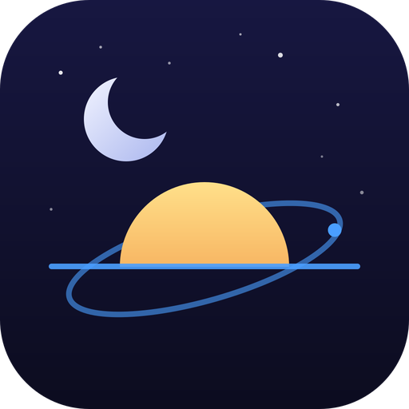

AstroSet ("we", "us", or "the app") is operated by the trader whose legal name, address, email address and telephone number are published on the AstroSet Google Play listing. These Terms of Service ("Terms") govern your use of the AstroSet Android application and any content made available through it.
By installing, accessing or using AstroSet, you agree to these Terms. If you do not agree, do not use the app and uninstall it.
AstroSet is a free daily app that displays astrology events (Vedic and Western), solar activity and space weather data, and weather forecasts. The app has no user accounts, no in-app purchases, no subscriptions, no advertising and no backend server operated by us.
AstroSet is provided for general information and entertainment. Astrology, horoscope and panchang content is not a substitute for professional, medical, legal, financial or other advice.
Solar, space weather and weather information is not safety-critical and must not be used as the sole basis for navigation, aviation, marine, emergency, health or safety decisions. Always consult official authorities and qualified professionals.
AstroSet retrieves data from public third-party sources, including NOAA SWPC, NASA DONKI, Open-Meteo, Kundlit, CosmyDay, ResonanceOne and the Tomsk space-observing spectrogram. Those sources are not controlled by us.
Third-party data may be delayed, incomplete, inaccurate, or temporarily unavailable. The app may also be unavailable during maintenance, network failures, device issues or provider outages. We do not guarantee uptime, continuous availability, or the accuracy or completeness of any data.
You agree to use AstroSet only for lawful purposes. You must not:
The AstroSet name, logo, interface, design and application code are owned by us or our licensors and are protected by applicable intellectual property laws. Third-party data, names and marks remain the property of their respective providers.
Your use of AstroSet is also governed by our Privacy Policy. Settings and cached data are stored locally on your device, and we do not operate a backend that stores your data.
To the maximum extent permitted by law, AstroSet is provided "as is" and "as available", without warranties of any kind, whether express, implied or statutory, including implied warranties of merchantability, fitness for a particular purpose and non-infringement. We do not warrant that the app will be error-free, uninterrupted, secure or free of harmful components.
To the maximum extent permitted by law, we are not liable for any indirect, incidental, special, consequential or punitive damages, or for any loss of data, profits, revenue or goodwill, arising from or related to your use of or inability to use AstroSet.
Nothing in these Terms excludes or limits liability that cannot be excluded or limited by law, including liability for death or personal injury caused by negligence, fraud or fraudulent misrepresentation, or any mandatory consumer rights available to you under the laws of your country of residence.
We may change, suspend or discontinue any part of AstroSet at any time. We may also update these Terms from time to time. Updated Terms will be posted at this URL with a revised "Last updated" date. Continued use of the app after changes take effect constitutes acceptance of the updated Terms.
You may stop using AstroSet at any time by uninstalling the app. We may suspend or terminate access to the app where reasonably necessary, including for misuse or legal compliance.
These Terms are governed by the laws of Sri Lanka, without regard to conflict-of-law rules. Subject to any mandatory consumer protection rights available to you in your country of residence, the courts of Sri Lanka have non-exclusive jurisdiction over disputes arising from these Terms or the app.
If you have questions about these Terms, contact us at chamara.wickramarathne@gmail.com.